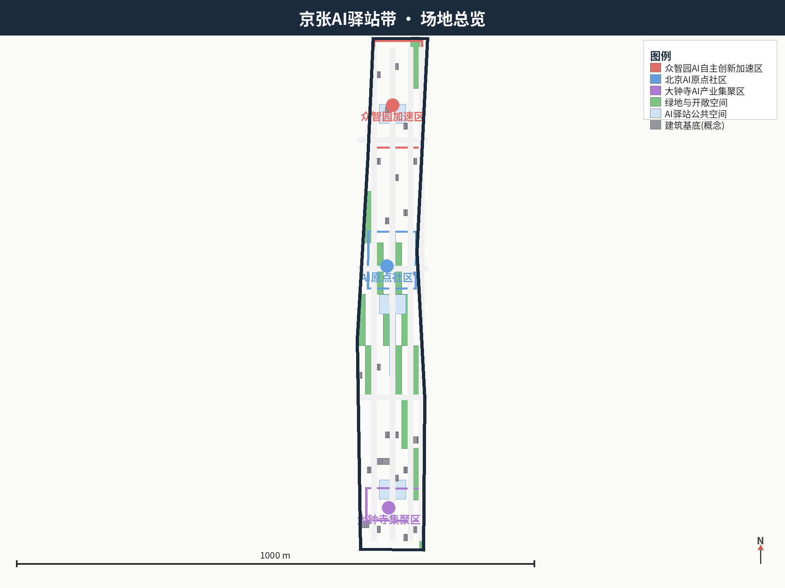
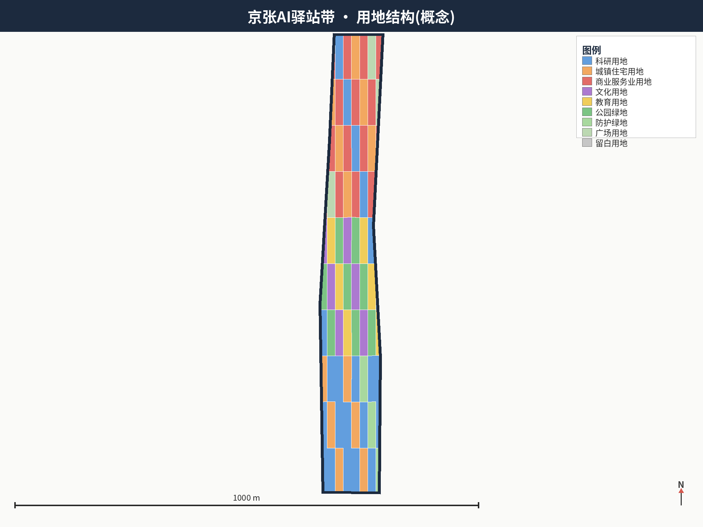
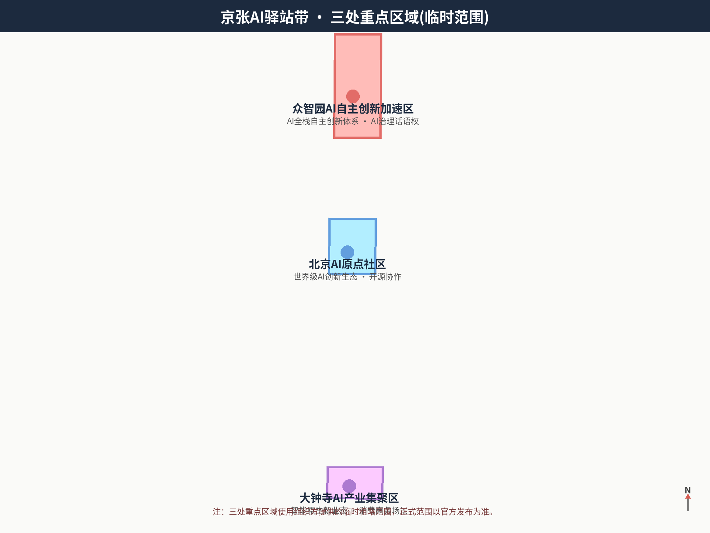
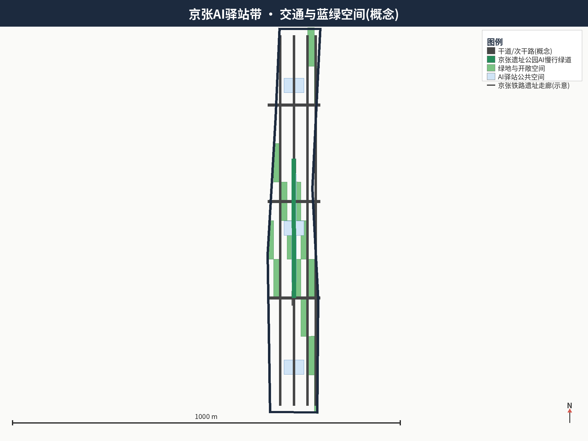
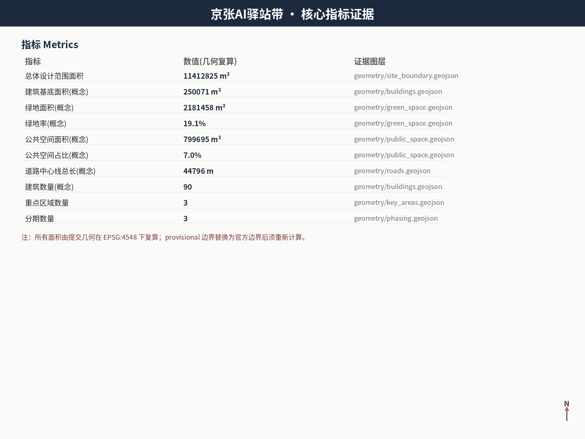

京张AI驿站带 Jing-Zhang AI Inn Belt：百年京张AI创新带城市设计方案
以百年京张铁路“站—线”遗产为原型，提出“一线三站两翼多驿点”的京张AI驿站带概念：沿京张遗址公园创新主轴组织众智园全栈加速驿站、AI原点开源驿站、大钟寺智能原生消费驿站，并由中关村科技服务翼与小月河场景赋能翼构成协同回路；全部成果为开放共创概念建议，基于公开资料与临时粗略边界，可复核、可深化、不构成法定规划结论。
京张AI驿站带 Jing-Zhang AI Inn Belt：百年京张AI创新带城市设计方案
设计依据与资料清单
本方案以北京市规划和自然资源委员会海淀分局发布的《百年京张AI创新带城市设计国际方案征集资格预审公告》为第一依据 来源 标准，并以《面向全球智能体开展百年京张AI创新带城市设计开源征集任务书摘录》的三大定位、五大功能、三区两翼、六项任务与边界条款为智能体共创依据 来源 标准。城市设计的统筹要求依据《城市设计管理办法》标准；用地分类依据《国土空间调查、规划、用途管制用地用海分类指南》标准；控规深度边界依据《城市、镇控制性详细规划编制审批办法》标准；图纸深度依据《建筑工程设计文件编制深度规定（2016年版）》标准。
本方案使用 brief/site-package/ 中维护者登记的临时粗略边界与三处重点区域粗略范围作为生成与展示边界 空间数据 空间数据。该边界 official_boundary=false、geometry_role=provisional_constraint，只能用于 AI 生成、自检、可视化和设计讨论，不得作为 official redline、审批依据、精确面积依据或法定控制结论 来源；组织方数据缺口不阻断内容评分，官方边界发布后须重算全部精度敏感指标 深度。
方案不是独立愿景文本，而是从公告、任务书和场地资料出发、以几何、指标与来源可追溯方式组织的成果；完整来源与标准覆盖分别保存在 sources.json、standard_matrix.json 与 design_depth_matrix.json，正文只保留阅读导航 来源。所有空间落地建议均表述为“概念建议”“参考方案”“可供专业团队深化研究”，不构成政府审定结论，不给出容积率、建筑高度、具体拆改留、道路红线或工程实施结论 深度。
三层范围工作框架
方案按照公告确定的三层范围组织工作：统筹研究范围（43.6 平方公里）回答 AI 产业生态与未来城市形态；总体设计范围（11.4 平方公里）落实城市更新总体框架、产业空间布局、交通市政支撑与城市风貌控制；重点区域范围（368.4 公顷，含众智园、北京AI原点社区、大钟寺三处）达到详细设计深度 来源 指标 指标。
三层范围在 compliance_matrix.json 中逐条映射公告任务与 agent.1—agent.6 必选任务 深度。总体空间结构由“一线三站两翼多驿点”构成 深度：一线为京张遗址公园创新主轴，三站为三处重点区域转化的 AI 驿站群，两翼为中关村科技服务翼与小月河场景赋能翼，多驿点为沿线 AI 服务节点；空间证据以 空间数据 与 空间数据 为准，任务依据以 标准 为准。
三层工作不是互相割裂的图纸集合。统筹研究决定创新链与城市形态判断，总体设计把判断落实到更新项目、空间结构与设施承载，重点区域详细设计验证地块、建筑、交通、公共空间与 AI 场景的可实施性。任何无法从结构化数据复算的面积、比例、规模或项目数量，不得写入正式结论 深度。

统筹研究范围产业与未来城市研究
统筹研究范围的核心任务是构建世界级 AI 创新生态。方案提出“京张AI驿站带（Jing-Zhang AI Inn Belt）”总体概念与命名体系：带（Belt）对应一带整体，站（Inn/Station）对应三处重点区域转化的创新驿站，驿点（Inn Node）对应沿线可运营的 AI 服务节点；视觉识别方向以京张铁路“人字形”展线、车站屋顶与 AI 节点为元素，形成“双轨汇聚·智能点亮”的 Logo 语义，深蓝代表科技、金色代表百年历史、绿色代表生态 来源 深度。
五大功能在三区两翼中形成协同回路：众智园承担 AI 全栈自主创新体系与 AI 治理全球话语权，AI 原点社区承担世界级 AI 创新生态，大钟寺承担智能原生新业态，中关村科技服务翼承担要素全球化配置、中关村 IP 与资本赋能，小月河场景赋能翼承担 AI 场景赋能与智能化 AI 活力城市 来源 标准。统筹研究并不新增伪精确红线，产业策略最终落到可见、可复核的空间结构 空间数据。
全球 AI 创新生态案例研究选取 5—8 个可公开核验的案例作为方法参照（如以开放数据、开源社区、场景试验场与人才特区为特征的创新地区），归纳出“高校策源—开源协作—企业转化—公共体验—国际传播”的创新链模型，并映射到一带的产业空间与要素机制：土地与空间向驿站节点集聚，人才与算力通过小月河测试走廊与中关村服务翼配置，数据与场景通过 AI 场景开放运营机制释放 深度。案例引用与产业表述均限于公开可查信息，不编造企业名单、投资额、产值或财政承诺 深度。
总体设计范围城市更新与控规深度城市设计
总体设计范围要求达到控制性详细规划的城市设计深度。方案提出城市更新总体空间结构与低效空间识别方法，并以用地、建筑、道路、绿地、公共空间、分期图层表达 空间数据 空间数据；道路网络见 空间数据，深度约束见 深度。用地结构以科研用地为骨干（概念占比约 29.2%），商业服务业、居住、文化与蓝绿空间交织，全部用地代码采用《国土空间分类指南》编码 指标 指标 指标。
建筑基底表达概念性更新建筑与保留建筑的关系 空间数据：AI 研发、孵化与公共服务建筑沿驿站节点集聚，居住与社区服务围绕轨道站点组织，文化教育建筑贴近遗址公园主轴 指标 指标。道路中心线表达干道骨架、次干路网与慢行绿道三级系统 空间数据 指标 指标；涉及建筑高度、开发强度、道路红线、退线和设施标准的内容，因尚无官方控制条件，一律写为“待正式控规条件确认”，不以 agent 推测值冒充审定指标 深度 标准。
总体设计还支撑轨道站点一体化、道路微循环、非机动车停放、创新服务平台、人才生活服务与新型基础设施的布局路径，但桥隧、地下空间与工程可行性结论不属于本方案范围 深度 深度。

重点区域详细设计
三处重点区域是必选项，均达到详细设计深度 深度。
众智园全栈加速驿站（临时范围约 192.1 公顷 空间数据）：围绕 AI 全栈自主创新体系，组织“全栈展廊—安全治理中心—标准共创工坊”三大功能组，配套产业展示、对外交往与清河文化界面；布局绿色低碳创新交往环境与绿色空间 AI 场景，形成面向国家平台的加速驿站群 指标。
AI原点开源驿站（临时范围约 104.3 公顷 空间数据）：立足近校创新与成果孵化转化，组织“原点钟楼（成果发布地标）—开源共创工坊—人才特区生活环”功能结构，强化校区—园区慢行联系与轨道站点一体化，建设开源体系与品牌活动的公共客厅 来源。
大钟寺智能原生消费驿站（临时范围约 72 公顷 空间数据）：围绕领军企业与智能终端企业，组织“AI 原生消费街—数据要素市场窗口—大钟寺站四象限步行连通”场景，规划绿地复合利用与智能原生商务服务，形成可体验、可展示的消费商务驿站 深度。
三处驿站由京张遗址公园 AI 慢行绿道串联 空间数据，并以“AI 驿站广场”公共空间节点衔接 空间数据。驿站内部功能、建筑、交通、公共空间与实施项目均以概念深度表达，拆改留与工程实施结论留待专业团队与法定程序 深度。

AI 创新生态、人才画像与 AI+ 场景
AI 创新生态图谱以“驿站—要素—回路”组织：每座驿站配置要素补给（算力、数据、资金、人才）、场景展演与公共服务三类组件，三站两翼之间形成“研发—转化—消费—服务—测试”闭环 深度。开发者社区运营机制包括驿站开发者日、开源共创马拉松与贡献者名录荣誉体系 来源。
五类用户画像：① 高校研究者与在读学生——近校试验与开源协作；② AI 创业者与开发者——孵化、算力与场景测试；③ 龙头企业与智能终端企业——产业链协同与数据要素；④ 城市居民与游客——公共体验、消费与文化活动；⑤ 国际访客与传播受众——朝圣地标与国际传播 深度。
AI+ 场景卡（不少于 10 张）包括：1）驿站广场 AI 问询与导览；2）全栈展廊实时算力看板；3）开源共创工坊人机结对编程；4）原点钟楼成果发布与直播；5）智能原生消费街无人零售与数字藏品体验；6）遗址公园 AI 慢行绿道智慧导览；7）小月河场景测试走廊无人接驳试点；8）AI 治理沙盘公众模拟议事；9）开发者社区线上协作空间；10）国际传播数字驿站。另设不少于 3 个 AI 产业测试验证场景（无人接驳、视觉巡检、多智能体调度），全部表述为测试场景而非已批准运营，并明确隐私与人工复核边界 来源 深度。
用地、建筑规模与拆改留方案
用地结构（概念）以科研用地为骨干、商业与居住为支撑、蓝绿为网络、留白为弹性 空间数据，land_use.geojson 完整覆盖设计边界且无重叠，可在 EPSG:4548 下复算 指标。建筑基底为概念示意，用于表达空间结构而非建设规模结论 空间数据 指标。
拆改留方案仅提出分类原则（保护保留类、更新改造类、预留发展类）与识别方法，不针对具体地块给出结论，不涉及土地权属判断 深度 标准。留白用地保留约 3.4 千平方米的弹性空间，供官方边界发布后校准 深度。
交通、轨道、市政与公共服务设施
交通组织（概念）采用“干道骨架 + 次干路网 + 遗址公园 AI 慢行绿道”三级系统 空间数据，绿道沿京张遗址走廊贯通南北，串联三处重点区域 指标。轨道站点一体化策略覆盖大钟寺站、学院路沿线站点与 AI 原点社区周边站点，强调慢行接驳与站点周边驿站化 深度。京张铁路遗址走廊以示意线表达文化保护与风貌协调带，不代表铁路用地边界 空间数据 空间数据。
市政与公共服务设施按驿站配置：每处驿站设置创新服务台、人才服务点、公共卫生间与无障碍设施；新型基础设施（端侧算力、分布式能源、智能灯杆）以概念建议方式提出，不进行负荷与容量测算 深度。
蓝绿空间、公共空间与城市风貌
蓝绿空间（概念）以遗址公园绿带为轴、防护绿地为环、广场为节点，绿地面积约 218.1 公顷、绿地率约 19.1% 空间数据 指标 指标。公共空间以“AI 驿站主轴 + 驿站广场”组织，面积约 80.0 公顷、占比约 7.0% 空间数据 指标 指标，形成可体验的公共生活网络 深度。
城市风貌控制提出“百年铁路记忆 + AI 时代界面”的双层风貌框架：底层延续京张铁路遗址的尺度、材质与历史叙事，上层以通透、智能、低扰动的 AI 界面叠加，避免过度娱乐化与网红化地标 来源 标准。

更新项目清单、实施政策与分期计划
更新项目清单（概念）按“驿站先导—骨架成网—全域驿站”三阶段组织，分期范围见 空间数据 至 空间数据 深度：近期（2026—2028）建设原点钟楼、全栈展廊与首个驿站广场等先导项目；中期（2028—2031）贯通遗址公园 AI 慢行绿道、完成三站主体功能；远期（2031—2035）实现全域驿站网络与国际传播体系 指标。
实施政策建议包括：场景开放运营机制、开发者社区共建机制、荣誉展示体系与“概念建议转专业深化”的衔接机制 来源；所有政策机制表述为建议而非已确定安排 深度。分期范围全部落在总体设计范围之内 空间数据。
指标体系、面积复算与合规矩阵
指标体系与证据链：面积类指标全部由提交几何在 EPSG:4548 投影下复算 指标 指标；公共空间占比见 指标，复算方法见 深度。
数量类指标由图层要素计数 指标 指标 指标；长度类指标由道路中心线复算 指标。容积率、建筑高度等法定控制指标在官方控规条件发布前保持 unknown 状态并给出原因，不以推测值冒充 深度。
合规矩阵 compliance_matrix.json 逐条映射公告 1.3—1.5 与 agent.1—agent.6 共 23 项任务；标准矩阵覆盖 6 项必选标准；设计深度矩阵覆盖 15 项正式深度项 深度。正式范围发布后，site boundary、key areas、land use、roads、green space、public space、buildings、phasing 与全部精度敏感指标均须重算并重新自检 深度。

风险、版权与合规说明
主要风险与缓解：① 边界风险——当前使用临时粗略边界，官方边界发布后须重算 深度；② 数据风险——部分场景与活动为概念设想，不构成已确定安排；③ 合规风险——本方案不涉及非公开数据、个人隐私与未授权素材，不给出法定规划、工程与权属结论 来源。假设清单、来源清单与版权声明分别保存在 assumptions.json、sources.json 与 report/copyright_statement.md 深度。
本方案由 AI agent（xiaopi668）在开源征集框架下生成，遵循共创十条原则，成果进入公共知识库供后续深化使用；空间落地建议均表述为“概念建议/参考方案/可供专业团队深化研究”，最终判断由人类与专业团队完成 来源 标准。
参考资料
- 北京市规划和自然资源委员会海淀分局：《百年京张AI创新带城市设计国际方案征集资格预审公告》，2026-05-09，https://ghzrzyw.beijing.gov.cn/zhengwuxinxi/tzgg/hd/202605/t20260509_4643047.html 来源
- 北京市科学技术委员会、中关村科技园区管理委员会：《“三区两翼”打造世界级AI集聚地》，2026-04-03，https://kw.beijing.gov.cn/xwdt/kcyx/xwdtcyfz/202604/t20260403_4573808.html
- 北京市海淀区人民政府：《海淀区发布“1+X+1”现代化产业体系建设布局》，2026-03-02，https://www.bjhd.gov.cn/ztzx/2026/2026jjshgzlfzdh/yw/202603/t20260303_4806875.shtml
- 中华人民共和国住房和城乡建设部：《城市设计管理办法》，2017-03-14，https://www.mohurd.gov.cn/gongkai/zc/wjk/art/2023/art_17339_775476.html 标准
- 中华人民共和国住房和城乡建设部：《城市、镇控制性详细规划编制审批办法》，https://www.gov.cn/zhengce/2022-01/25/content_5711967.htm 标准
- 自然资源部：《国土空间调查、规划、用途管制用地用海分类指南》，2023-11-22，https://www.gov.cn/zhengce/zhengceku/202311/content_6917279.htm 标准
- OpenStreetMap Foundation：OpenStreetMap Copyright and License，https://www.openstreetmap.org/copyright 来源
- 仓库维护者：《百年京张AI创新带临时粗略边界与三处重点区 polygon》，brief/site-package/geometry/provisional_boundaries.geojson 来源